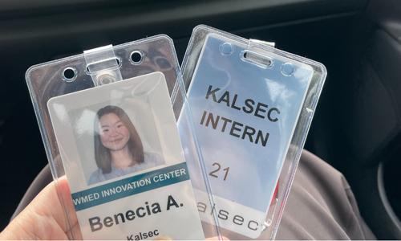

Research Projects
A curated collection of research I've contributed to as a biology graduate student.
🔬 IL-18BP Cytokine Project (ongoing)
Investigating the role of IL-18 binding protein in inflammation regulation, using cytokine profiling in vitro.

🧫 OMK Cell Suspension Study
Evaluating owl monkey kidney cell viability between monolayer vs suspension culture conditions.

🌿 Kalsec R&D Internship
Worked on antioxidant optimization using OSI methods, and assisted in flavor profiling in a wet lab environment.